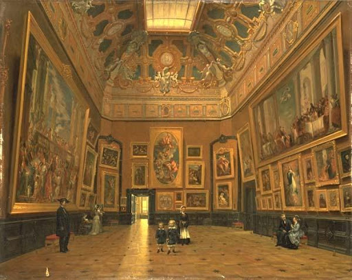
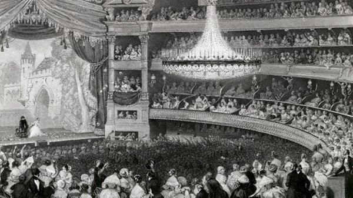

II. L'accès à la culture jusqu'à l'ère d'Internet
Jusqu'à l'avènement d'Internet, la culture était relativement peu accessible. Les concerts de musique étaient réservés aux classes bourgeoises, privant ainsi les milieux défavorisés, et la situation était identique concernant les musées. Ainsi, les individus appartenant à des milieux aisés pouvaient accéder aux expositions et autres évènements, découvrant ainsi les nouveaux styles (mouvement impressionniste au début du XXème siècle par exemple), mais cela n'était pas le cas des classes populaires.
Cela implique que l'art était implicitement réservé aux milieux favorisés et que, d'une manière générale, les milieux moins aisés n'étaient pas concernés par cela : la culture était très peu démocratisée et vulgarisée.

